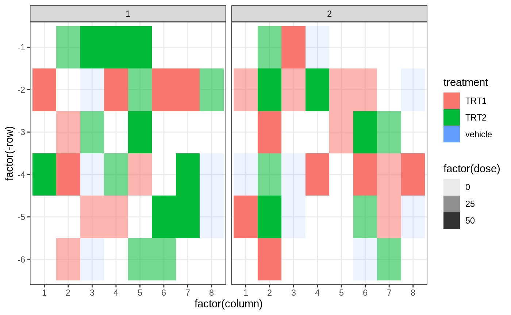

basic_examples.Rmdlibrary(designit) library(tidyverse) #> ── Attaching packages ───────────────────────────────────────────────────────────────────────────────────────────────────────────────────────────────── tidyverse 1.3.0 ── #> ✓ ggplot2 3.3.2 ✓ purrr 0.3.3 #> ✓ tibble 3.0.3 ✓ dplyr 1.0.0 #> ✓ tidyr 1.1.0 ✓ stringr 1.4.0 #> ✓ readr 1.3.1 ✓ forcats 0.5.0 #> ── Conflicts ──────────────────────────────────────────────────────────────────────────────────────────────────────────────────────────────────── tidyverse_conflicts() ── #> x dplyr::filter() masks stats::filter() #> x dplyr::lag() masks stats::lag()
This is a basic example:
anno <- tribble( ~Cell, ~Trt, ~Type, ~Rep, "WT", "treated", "A", 1, "WT", "treated", "A", 2, "WT", "nontreated", "A", 1, "WT", "nontreated", "A", 2, "WT", "control", "A", 1, "WT", "control", "A", 2, "WT", "treated", "B", 1, "WT", "treated", "B", 2, "WT", "nontreated", "B", 1, "WT", "nontreated", "B", 2, "WT", "control", "A", 1, "WT", "control", "A", 2, "KO", "treated", "A", 1, "KO", "treated", "A", 2, "KO", "nontreated", "A", 1, "KO", "nontreated", "A", 2, "KO", "treated", "B", 1, "KO", "treated", "B", 2, "KO", "nontreated", "B", 1, "KO", "nontreated", "B", 2, )
Samples of a 2-condition invivo experiment are to be placed on 48 well plates.
These are the conditions
# conditions to use conditions <- data.frame(group = c(1, 2, 3, 4, 5), treatment = c("vehicle", "TRT1", "TRT2", "TRT1", "TRT2"), dose = c(0, 25, 25, 50, 50)) knitr::kable(conditions)
| group | treatment | dose |
|---|---|---|
| 1 | vehicle | 0 |
| 2 | TRT1 | 25 |
| 3 | TRT2 | 25 |
| 4 | TRT1 | 50 |
| 5 | TRT2 | 50 |
We will have 3 animals per groups with 4 replicates each
# sample table (2 animals per group with 3 replicates) n_reps <- 4 n_animals <- 3 samples <- dplyr::bind_rows(replicate(n_animals, conditions, simplify = FALSE), .id = 'animal') samples <- dplyr::bind_rows(replicate(n_reps, samples, simplify = FALSE), .id = 'replicate') %>% dplyr::mutate(SampleID = paste0(treatment,'_',animal,'_',replicate), AnimalID = paste0(treatment,'_',animal)) DT::datatable(samples)
Corner wells of the plates should be left empty. This means on a 48 well plate we can place 44 samples. Since we have 60 samples, they will fit on 2 plates
n_samp <- nrow(samples) n_loc_per_plate <- 48 - 4 n_plates <- ceiling(n_samp / n_loc_per_plate) exclude_wells <- expand.grid(plate = seq(n_plates), column = c(1,8), row = c(1,6))
Create a BatchContainer object that provides all possible locations
bc <- BatchContainer$new( dimensions = c('plate' = n_plates, 'column' = 8, 'row' = 6), exclude = exclude_wells ) bc #> Batch container with 96 locations and 8 excluded. #> Dimensions: plate<size=2>, column<size=8>, row<size=6> bc$n_available #> [1] 88 bc$exclude #> # A tibble: 8 x 3 #> plate column row #> <int> <int> <int> #> 1 1 1 1 #> 2 2 1 1 #> 3 1 8 1 #> 4 2 8 1 #> 5 1 1 6 #> 6 2 1 6 #> 7 1 8 6 #> 8 2 8 6
Use random assignment function to place samples to plate locations
bc$distribute_samples(samples = samples, distribution_function = distribute_random, random_seed = 42) bc$get_samples() #> # A tibble: 88 x 10 #> plate column row replicate animal group treatment dose SampleID AnimalID #> <int> <int> <int> <chr> <chr> <dbl> <fct> <dbl> <chr> <chr> #> 1 1 1 2 4 1 4 TRT1 50 TRT1_1_4 TRT1_1 #> 2 1 1 3 <NA> <NA> NA <NA> NA <NA> <NA> #> 3 1 1 4 2 2 5 TRT2 50 TRT2_2_2 TRT2_2 #> 4 1 1 5 <NA> <NA> NA <NA> NA <NA> <NA> #> 5 1 2 1 2 1 3 TRT2 25 TRT2_1_2 TRT2_1 #> 6 1 2 2 <NA> <NA> NA <NA> NA <NA> <NA> #> 7 1 2 3 4 1 2 TRT1 25 TRT1_1_4 TRT1_1 #> 8 1 2 4 2 2 4 TRT1 50 TRT1_2_2 TRT1_2 #> 9 1 2 5 <NA> <NA> NA <NA> NA <NA> <NA> #> 10 1 2 6 3 2 2 TRT1 25 TRT1_2_3 TRT1_2 #> # … with 78 more rows bc$get_samples(remove_empty_locations = TRUE) #> # A tibble: 60 x 10 #> plate column row replicate animal group treatment dose SampleID AnimalID #> <int> <int> <int> <chr> <chr> <dbl> <fct> <dbl> <chr> <chr> #> 1 1 1 2 4 1 4 TRT1 50 TRT1_1_4 TRT1_1 #> 2 1 1 4 2 2 5 TRT2 50 TRT2_2_2 TRT2_2 #> 3 1 2 1 2 1 3 TRT2 25 TRT2_1_2 TRT2_1 #> 4 1 2 3 4 1 2 TRT1 25 TRT1_1_4 TRT1_1 #> 5 1 2 4 2 2 4 TRT1 50 TRT1_2_2 TRT1_2 #> 6 1 2 6 3 2 2 TRT1 25 TRT1_2_3 TRT1_2 #> 7 1 3 1 2 1 5 TRT2 50 TRT2_1_2 TRT2_1 #> 8 1 3 2 2 3 1 vehicle 0 vehicle_3… vehicle… #> 9 1 3 3 1 1 3 TRT2 25 TRT2_1_1 TRT2_1 #> 10 1 3 4 3 3 1 vehicle 0 vehicle_3… vehicle… #> # … with 50 more rows
Plot of the result
library(ggplot2) bc$get_samples(remove_empty_locations = TRUE) %>% ggplot(aes(x = factor(column), y = factor(-row), fill = treatment, alpha = factor(dose))) + geom_tile() + facet_wrap(~plate) + theme_bw() #> Warning: Using alpha for a discrete variable is not advised.
